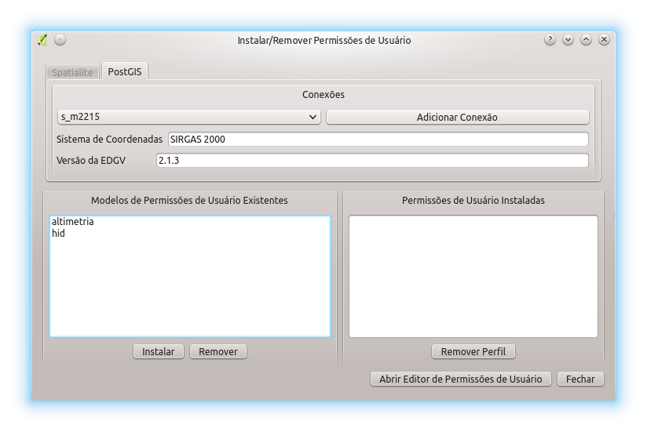

A janela mostrada a seguir permite a instalação/remoção de permissões de usuário em bancos de dados definidos pelo usuário do plugin. A janela que permite isso pode ser vista a seguir.

Nesta janela é possível ver os modelos de permissões criados na máquina do usuário no campo Modelos de Permissões de Usuário Existentes. Elas podem ser instaladas no banco, para tanto, devem ser selecionadas e posteriormente deve se clicar no botão Instalar. Caso se queria, é possível apagar do computador um modelo de permissão clicando no botão Remover. As Permissões de Usuário instaladas podem ser vistas no campo Permissões de Usuário Instaladas. Caso se deseje remover algumas permissões deve-se selecionar as mesmas e clicar no botão Remover Perfil.
Caso não existam os Modelos de Permissões necessários é possível confeccionar eles através do botão Abrir editor de modelos de permissões.